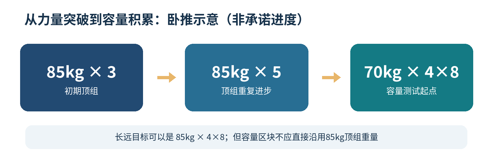
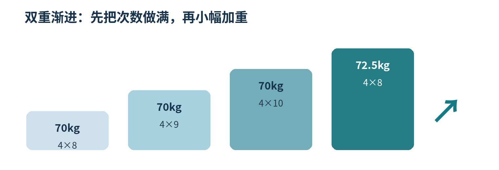

核心理念与适用边界
第一目标：肌肥大与形体改善。第二目标：卧推、深蹲、硬拉等主力动作的长期力量发展。
核心路线：先提高大重量下的重复能力，再把力量提升转化为中高负重下的多组重复能力；完成一轮后，重新进入力量侧重区块。
动作分工：仅将杠铃卧推、杠铃深蹲、杠铃硬拉（明确采用的变式）作为周期重点；上斜推举、下拉、划船、腿弯举、侧平举、手臂等其他动作始终以双重渐进为主。
基本原则：力量与容量并行存在，只改变侧重比例。力量区块也增肌；容量区块也可能提高力量。不要假设某种区块化次序有确定的增肌优势。
长远方向：85kg×3 → 85kg×5 → 逐步让85kg成为多组容量重量（例如4×8）。这可能需要数轮循环，并非单次区块就应达成。
方法定义：RPT、Drop Set与双重渐进
| 方法 | 组间组织 | 用途及限制 |
|---|---|---|
| RPT / 倒金字塔 | 顶组最重；充分休息后逐组降重、增加目标次数 | 主力动作的力量侧重区块；便于追踪高负重表现 |
| Drop Set / 传统递减组 | 一组后快速降重，几乎不休息，继续重复 | 可节约时间、增加局部疲劳；不等于比传统组增肌更多 |
| Double Progression / 双重渐进 | 在设定次数范围内先加次数，达标再加重量 | 适用于两个区块的绝大多数辅助动作，也适用于容量区块主力动作 |
| Deload / 减载 | 阶段性减少组数、接近力竭程度或训练强度 | 按恢复状态安排；不是区块切换的必经程序 |
最终采用的术语：三大项力量区块使用“顶组 + 充分休息的回退组”（RPT形式）；先前提出的“顶组后连续两次不停歇降重”应归类为Drop Set，不是同一种方案。
注｜孤立器械动作可以选择在最后一组使用Drop Set，但不是五个训练日的强制要求。
训练技术：向心意图、离心控制、RIR
| 动作阶段 | 执行原则 | 注意 |
|---|---|---|
| 离心阶段 | 主动、可控地下放，卧推可参考约1–3秒 | 无需刻意极慢，更不能放任重量自由下落 |
| 转换阶段 | 维持支撑与身体稳定 | 卧推不反弹；深蹲不靠失控弹震 |
| 向心阶段 | 保持尽可能快速、有力的发力意图 | 大重量实际速度慢是正常现象 |
| 每组结束 | 按RIR控制余力 | 增肌多数工作组约RIR 1–3；高技术主力动作更保守 |
重要区分：最大力量、功率/爆发力与肌肉耐力相关但不相同；离心训练不等于耐力训练。两个区块都需要完整向心、离心过程。
一个可重复的增肌小周期
| 区块 / 窗口 | 主力动作重点 | 辅助动作与观察指标 |
|---|---|---|
| A 力量侧重｜约3–5周 | 顶组低次数 + 1–2组正常休息的回退组 | 其他动作继续双重渐进；追踪顶组重量、次数、RIR和技术 |
| T 过渡｜几次训练到约1周 | 从低次数转向计划的6–10次等范围 | 按疲劳决定是否减载；起始容量保守 |
| B 容量侧重｜约4–6周 | 主力动作转向多组6–10次（硬拉通常更低） | 双重渐进；追踪多组完成度、RIR及恢复；可保留少量重练习 |
| R 复盘与再进入A | 评估下一轮顶组的起点 | 对比力量、围度、体重、疲劳，不要求每轮都突破新纪录 |
注｜周数是实践性试行区间。四主题轮换并非按固定周训练，最好额外记录各主力动作在每个区块内实际练了多少次。

三大项：力量区块与容量区块怎么做
| 动作 | 区块A：RPT方向 | 区块B：容量方向 | 特别说明 |
|---|---|---|---|
| 杠铃卧推 | 顶组3–6次；回退6–10次 | 3–4组×6–10次；可用4×8–10 | 重量由多组能力而非顶组直接决定 |
| 杠铃深蹲 | 顶组3–6次；回退5–8次 | 约3组×6–8次，适应后可逐步增加 | 关节不适、左右代偿优先处理 |
| 杠铃硬拉 | 顶组3–5次；回退4–6次 | 约2–3组×4–8次 | 不要求4×12；下背疲劳成本较高 |
卧推RPT示例（假设85kg×3在RIR 1–2）
| 阶段 | 负重 | 目标次数 | 休息 |
|---|---|---|---|
| 渐进热身 | 逐组增加 | 3–4组，不接近力竭 | 按需 |
| 顶组 | 85kg | 3次 | — |
| 回退组1 | 75kg | 5–6次 | 约3分钟 |
| 回退组2 | 70kg | 6–8次 | 约3分钟 |
注｜仅为结构示例，不代表当前实测可用重量。对于低次数较重训练，必要时休息超过3分钟。
五类训练日的区块化分工
| 训练日 | 区块A | 区块B |
|---|---|---|
| 胸部 | 杠铃卧推RPT；其他胸肩二头动作双重渐进 | 卧推多组训练；上斜/下斜推胸/飞鸟继续双重渐进 |
| 背部 | 半程或传统硬拉按选定变式做力量重点；其余双重渐进 | 保留少量重负重，划船/下拉维持有效容量 |
| 股四 | 杠铃深蹲RPT；哈克、腿屈伸、保加利亚及髋内收双重渐进 | 深蹲多组训练；其余继续双重渐进 |
| 股二 | 若杠铃RDL已作主力，避免与多种硬拉都高强度叠加 | RDL和腿弯举分担髋伸与膝屈刺激 |
| 肩部（可选） | 史密斯肩推、杠铃肩推及侧平举等以双重渐进为主 | 同样以双重渐进为主；按胸部日恢复控制总量 |
重要边界：原先在背部日使用半程硬拉、股二日使用RDL的安排，与“三大项包含传统杠铃硬拉”的最新口径并不完全相同。落地前需确定每轮唯一重点硬拉变式，避免背部日与股二日叠加过高的髋伸和腰背负荷。
A→B：如何确定容量区块起始重量
原则：优先把RPT中间组或后段组的重量当作“候选值”，不直接拿顶组重量，也不把某一回退组自动当作4×8的固定重量。
| 参考RPT记录 | 假设重量 | 完成次数 |
|---|---|---|
| 顶组 | 85kg | 4次 |
| 中间组 | 77.5kg | 6次 |
| 末组 | 70kg | 8次 |
起始操作：如果计划4×8，可以先以70kg作为首次测试重量。第一组完成8次时检查RIR是否约2–3；接着保持完整幅度、合适组间休息，观察能否稳定完成其他组。
调节规则：若表现明显轻松，可下次加2–2.5kg；若各组次数急剧下降，减约2.5%–5%，或先用3组过渡，再增加到4组。
| 容量目标 | 85kg×4背景下的粗略测试候选 | 备注 |
|---|---|---|
| 3×8 | 约70–75kg | 示意值；需当场检验 |
| 4×8 | 约67.5–72.5kg | 工作组更多，通常需更保守 |
| 4×10 | 约62.5–67.5kg | 次数增加、候选重量下调 |
| 4×12 | 约57.5–65kg | 并非所有动作都适合 |
注｜这些重量来自既往讨论中的演示估计，不是经个体测试或临床研究验证的精确处方。RPT若使用连续递减，末组的疲劳影响更大。
B区块：双重渐进的标准操作

| 进阶节点 | 工作重量 | 完成目标 | 下一步 |
|---|---|---|---|
| 起点 | 70kg | 4×8 | 在固定重量下增加次数 |
| 进步 | 70kg | 4×9 | 继续提高次数 |
| 达标 | 70kg | 4×10 | 动作合格后加2.5kg |
| 新重量 | 72.5kg | 4×8 | 再次提高次数 |
| 再次达标 | 72.5kg | 4×10 | 再加2.5kg |
| 评估窗口 | 75kg | 4×8 | 可以评估切回A；非硬门槛 |
| 容量阶段 | RIR建议 | 解释 |
|---|---|---|
| 开始 | 2–3 | 选择起始重量，控制初期疲劳 |
| 中期 | 1–3 | 累计次数与重量进步 |
| 后期 | 1–2 | 关注高质量有效训练，不要求力竭 |
| 减载（如需） | 3–5或更多 | 降低疲劳 |
注｜“70kg×4×10→72.5kg×4×8”代表双重渐进的节点示意。实际可能先出现10/10/9/8等混合次数，允许在范围内逐步补齐。
| 动作 | 容量次数范围 | 达标后的增重参考 |
|---|---|---|
| 杠铃卧推 | 3–4×8–10 | 约2–2.5kg |
| 杠铃深蹲 | 3–4×6–10 | 约2.5–5kg |
| 杠铃硬拉 | 2–3×5–8 | 约2.5–5kg |
| 辅助复合动作 | 常见8–12次 | 器械/哑铃最小可行档位 |
| 孤立动作 | 常见10–20次 | 最小可行档位 |
B→A：何时转换回RPT
不要设置唯一的“必须增加5kg/10kg”门槛。以约4–6周的计划窗口为起点，再结合表现、动作质量及恢复决定。
| 评估项目 | 重点问题 | 推荐判断 |
|---|---|---|
| 区块长度 | 已完成预定的4–6周吗？ | 达到观察窗口可评估，不必硬等次数上限 |
| 容量进步 | 重量/总次数/技术是否提高？ | 70kg→72.5kg也是进步；没有固定增重门槛 |
| 疲劳恢复 | 睡眠、表现、关节状态如何？ | 疲劳高可减载后再进入RPT |
| 力量专项 | 之前RPT顶组是多少？ | 下一轮从相近重量、约RIR 1–2重建，不擅自加到90–95kg |
返回RPT的第一堂主力动作训练
先正常热身 → 参考上一轮顶组（例如85kg×4）→ 选择接近原水平的重量，保留1–2次余力完成3–5次 → 根据技术和发力速度，再重新确定本轮顶组。
解释：如果新一轮85kg能多做一次，说明该项表现进步；如果暂时没有提高，也不意味着容量区块失败。训练频率、动作熟练度、疲劳水平都会影响重组表现。
减载周：按需插入，不作为固定开关
| 状态 | 行动 |
|---|---|
| 状态好、持续进步、关节舒适 | 直接进入下一侧重区块；首几次训练以较低组数适应 |
| 有累积疲劳、但表现尚可 | 过渡几次训练，降低总组数与接近力竭程度 |
| 连续退步、恢复明显不佳 | 考虑约5–7天减载；正式组约减少30%–50%起步 |
| 持续疼痛、明显代偿或动作受限 | 暂停诱发疼痛的高强度动作并寻求专业评估 |
减载的目的：管理累积疲劳，而不是等待一个确定的“超量恢复峰值”。减载也不等于完全不训练。
动作多样性、容量与恢复的平衡
动作多样性：不同关节角度和阻力曲线可以产生互补刺激，但“动作更多＝募集更多不同纤维＝增肌更快”并无必然关系。
训练量：观察每块肌群在一段时间内的高质量有效组数。容量区块中主力动作组数增加时，可适度减少重复性辅助组数。
爆发意图：卧推、深蹲、硬拉向心积极发力；离心始终可控，不追求失控的动作速度。
频率：按胸／背／股四／股二轮换、练二休一、可选肩部日记录实际训练次数；不要机械等同于每周每部位一次。
恢复跟踪：同步记录训练表现、睡眠、肌肉酸痛、关节症状、主观疲劳及体重/围度。
减脂期与长期循环
增肌大周期可以包含数轮A↔B。何时减脂，单独根据体重、腰围、体脂趋势、外形、力量表现与恢复做决定；不用每完成一次容量区块就立刻减脂。
减脂期间以保留肌肉和力量为目标，继续抗阻训练，结合恢复适当调整组数，同时保证蛋白质与睡眠。热量安排需要参考当下身体数据，不由区块图自动决定。
每次复盘的记录模板
| 记录项 | 该怎么记录 |
|---|---|
| 力量表现 | 动作、顶组重量×次数、RIR、回退组表现 |
| 容量表现 | 工作重量、逐组次数、RIR、休息时长 |
| 体型进度 | 体重周均值、腰围、固定条件下的围度或照片 |
| 疲劳与技术 | 睡眠、身体不适、动作质量、是否改动动作 |
| 区块决策 | 继续A / 过渡 / 减载 / 进入B / 返回A；写下理由 |
本理念的五条不变原则
- 增肌优先，力量作为提高未来工作重量的工具。
- RPT与Drop Set不同；三大项优先使用充分休息的顶组与回退组。
- 容量区块起始重量由目标次数＋RIR＋完整多组表现决定。
- 双重渐进先加次数，达标后小幅加重；不设置固定增重后才能切区块的门槛。
- 减载按疲劳调整；每轮比较力量、容量、围度与可持续性。
资料说明
这份文档是依据此前交流整理的个人训练理念，不是对所有人有效的最优方案。文中的85kg、70kg、75kg等均为讨论时的演示负重。先前提及的ACSM训练综述、卧推向心速度研究、周期化训练Meta分析和减载研究，是讨论依据；本文不将其解释为“先RPT后容量必然增肌更多”的直接证据。